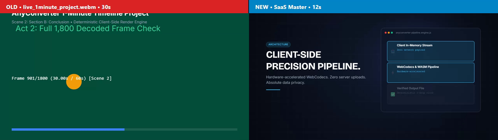

Direct, deterministic pixel comparison between baseline engineering demo exports and Phase 01 production compositions.
Deterministic Side-by-Side Comparison (OLD_VS_NEW_COMPARISON.png)

Enlarged Header Zoom Proof (UPPER_BAR_ZOOM_PROOF.png):
| Panel |
Source Media |
Timestamp |
Extracted Frame |
Source SHA-256 |
| LEFT (OLD • live_1minute_project.webm • 30s) |
live_1minute_project.webm |
30.0s (50%) |
baseline_inspection/live_1minute_project_pct_50.png |
3b61c3cc0a2c7eea2ebb241b68bbfe786dd93c268566d65914146b1ef04b1d3f |
| RIGHT (NEW • SaaS Master • 12s) |
From_Raw_Data_to_Clear_Answers_Master.webm |
12.0s (50%) |
extracted_frames/saas_master_pct_50.png |
3bbc56b4135d4b94d14c67d4526d25819eb020f14901fb0bbc140e93e6dcf77b |
* Prerequisite Notice: Re-extracting frames requires the original baseline video at reports/creative-studio/blocker-repair/REAL_OUTPUTS/live_1minute_project.webm. Browser runner execution requires full website repository files and dependencies (npx playwright install chromium).